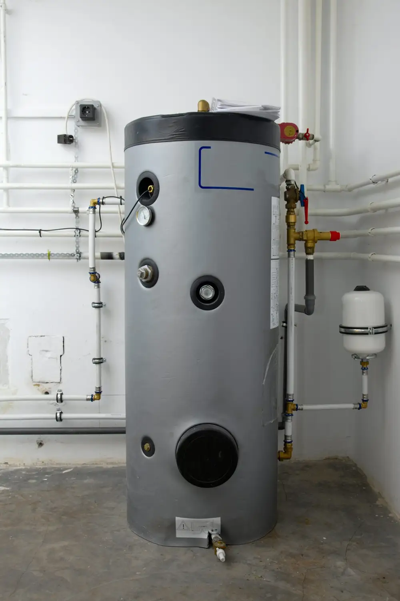

November 3, 2020
Winter is on the horizon, and there’s nothing quite like warming up with a hot shower or bath on a cold day. Make sure your water heater is ready for the cold winter weather with these tips.
Book Routine Maintenance
Water heaters have a surprisingly short lifespan, with many models lasting between 6–10 years. Prevent costly breakdowns—and extend the life of your water heater—by having your water heater regularly maintained.
Routine water heater maintenance involves testing the pressure-relief valve, draining any sediment or debris from the bottom of the tank, and examining the anode rod for signs of deterioration. Naturally occurring minerals in the water—such as calcium and magnesium—build up over time, creating sediment in your water heater tank. This sediment can lead to bigger issues, such as causing bacteria or corrosion inside the tank.
Add an Insulating Jacket
An insulating water heater jacket—sometimes referred to as a blanket—may improve an aging water heater’s efficiency. According to the US Department of Energy, adding an insulating jacket may reduce standby heat loss by up to 45%, saving you approximately 16% on your monthly energy bills. If your water heater is warm to the touch, an insulating jacket will help slow ambient heat loss.
Some utility companies offer insulating jackets at reduced or no cost. Jackets are a relatively easy DIY installation—just be mindful of any pilot lights or wiring.
Set the Temperature to 120°F
Cold weather means cranking up the heat, right? Wrong! Keep your water heater at 120°F to reduce the risk of scalding injuries. Turning down your water heater’s temperature will also help you save money on your energy bills each month.
Consider Upgrading Your Water Heater
If your water heater is struggling to keep up with your family’s needs, it might be time to consider an upgrade. Tankless water heaters require less maintenance and are significantly more energy-efficient, providing you with hot water on demand.
Insulate Exposed Pipes
Pipes will freeze when exposed to temperatures below 20°F. Insulate any exposed pipes—including outside, in the garage, and in the attic—to prevent them from freezing during the winter. Frozen pipes can burst, causing costly leaks and water damage.
At Goff Heating & Air Conditioning, we’re proud to offer heating, air conditioning, and plumbing maintenance and repair in Texarkana, TX. Visit our website to learn more about our services, or book a maintenance appointment by calling (903) 838-6923.